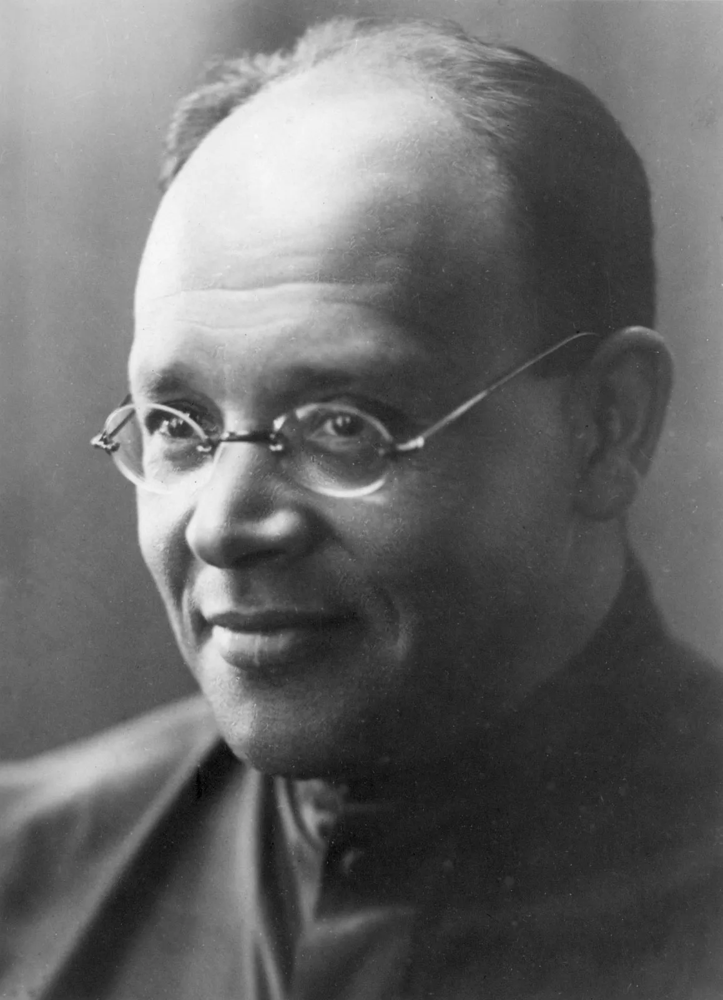

Isaac Babel (1894-1940)
- Modernism - focus on language, use of skaz (Bakhtin would call it "double-voicedness" when the author's voice dominates the voice of the character) (Cossacks, Odessa gangsters), and instantiation of 1920s ornamentalist prose
- Modernism - ideology of alienation from traditional morality
- Two major cycles - Red Cavalry and Odessa Stories; short stories as snapshots edited together i.e. montage prose
- Aestheticization of violence - very visual
- Anxiety of belonging - being Jewish, trying to belong to Cossacks, natural enemies of Jews (My First Goose)
